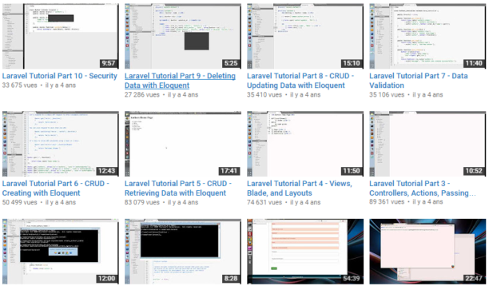

Top 10 des chaînes YouTube pour les développeurs:
Vous voulez apprendre à coder ou vous perfectionnez sur un logiciel particulier ? Il existe plusieurs chaînes YouTube spécialisées qui pourraient bien vous être utiles. Les chaînes les plus professionnelles dans le secteur sont essentiellement anglo-saxonnes et offrent chacune une approche d’apprentissage différente. Mais pour ceux qui ont un peu de mal en anglais, il faudra s’accrocher. Voici notre top 10.
TheNewBostonAvec son million et demi d’abonnés, TheNewBoston est une véritable institution pour apprendre toutes les bases du développement informatique mais également du web design. Les vidéos sont parfaitement réalisées (voix off et motion design explicatif) ainsi que catégorisées selon le logiciel que vous souhaitez approcher.
Google Developers
Google a également sa chaîne de tutoriels spécial développeurs. En revanche, rien à voir avec le site précédent. Sur Google Developers vous trouverez des leçons interactives, des actualités et même des mini-conférences autour des sujets de développement web.

Derek Banas
Derek Banas est l’une des chaînes de tutoriels les plus connues. Non seulement vous pouvez y apprendre un coder en Javascript en 30 minutes, mais vous pouvez aussi apprendre à trouver le plat le plus parfait en termes nutritionnels ou encore quel body langage adopter dans des situations particulières.
Learn Code Academy
La chaîne Learn Code Academy a été créée en 2012 et n’a cessé de prendre du volume depuis. Les vidéos font parfois jusqu’à 50 000 vues en quelques jours. Ce que l’on aime, c’est les touches d’humour qui se glissent dans des explications parfois un peu fastidieuses des logiciels de code. Et en plus ils sont sympas, parce qu’ils font parler les copains (interview avec les fondateurs de DevTips par exemple).
Codecourse
Codecourse est une chaîne YouTube animée par un certain Alex. Celui-ci propose des cours de code très détaillés dont certaines démo s’étendent sur plusieurs vidéos. C’est probablement la chaîne la plus complète si on commence à coder sans aucune base.
DevTips
DevTips c’est le site le plus « branché » de tous : les vidéos sont impeccablement réalisées et c’est sur cette chaîne que vous saurez avant tout le monde les dernières tendances en matière de développement. Les astuces sont simples et rapides, mais il faut déjà avoir une bonne connaissance des bases pour ne pas être largué !
Adam Khoury
Adam Khoury est un grand fan de vidéos et on sent bien dans les siennes qu’il prend plaisir à partager son savoir aux internautes. Il explique notamment comment se servir de JavaScript, PHP, SQL, HTML, CSS, ActionScript
CodeGeek
CodeGeek est l’une des seules chaînes YouTube très performante pour le développement d’applications mobiles. Ces 47 tutoriels sont principalement centrés sur AngulasJs, NodeJS, Javascript, NodeJs Frameworks, PHP.
Chris Coyier
Chris Coyier est un véritable artiste du xHTML/CSS. Après des études brillantes en multimédia, plusieurs sites créés et un ouvrage à succès concernant WordPress, c’est sa chaîne YouTube CSS Tricks qui l’a rendu célèbre. Dans ses vidéos, il échange avec ses fans par webcam interposées et répond aux différentes problématiques qu’ils peuvent rencontrer en codant
Andrewperk
Andrew Perk fait partie de la même team que Chris Coyier et Adam Khoury, des vrais mordus de code qui se sont lancés tous seuls dans les tutos-vidéos. Andrew a la particularité de rarement parler et d’utiliser majoritairement des instructions écrites. Attention, il faut rester bien concentré au risque de perdre parfois un peu le fil.
